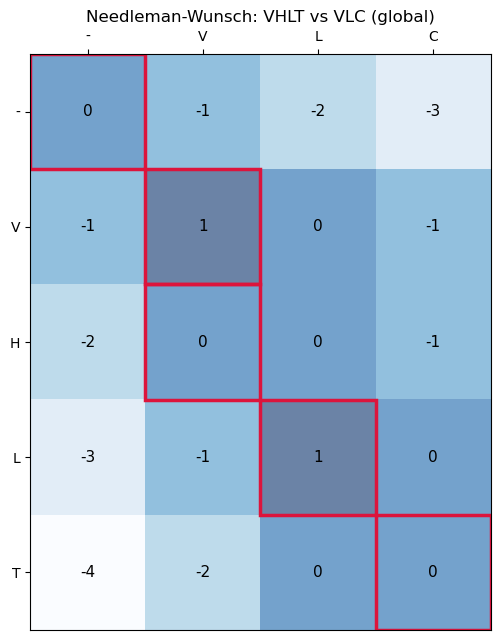
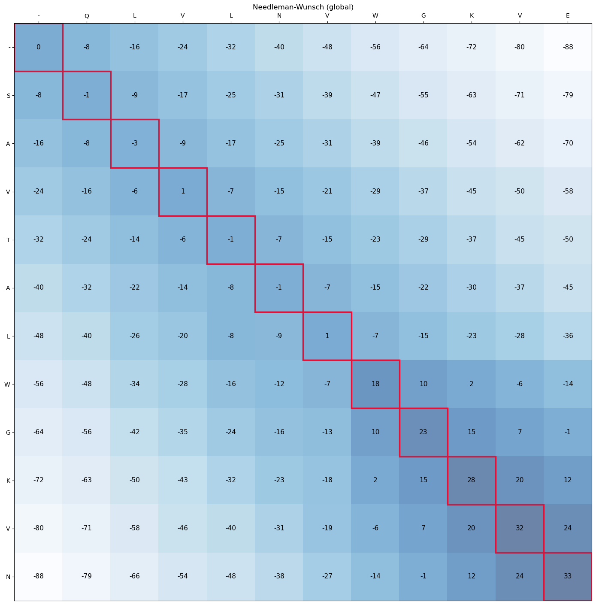
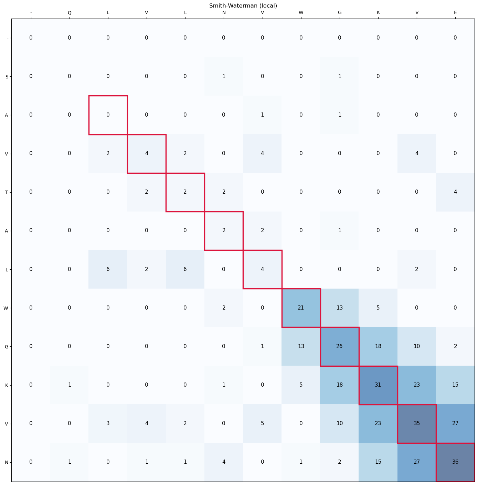
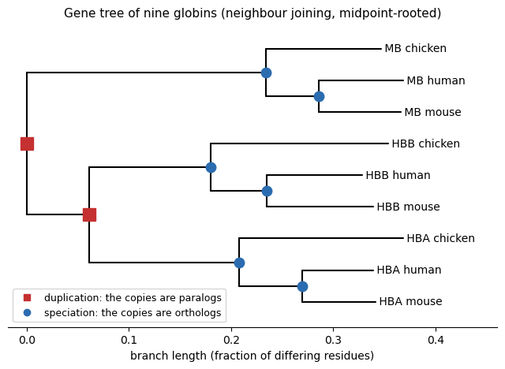

# Install the libraries Colab does not come with (does nothing if they are already installed)
import importlib.util, subprocess, sys
for module, package in [("Bio", "biopython")]:
if importlib.util.find_spec(module) is None:
subprocess.run([sys.executable, "-m", "pip", "install", "-q", package], check=True)Session 4 — Sequence Alignment in code
This notebook implements Needleman-Wunsch (global) and Smith-Waterman (local) alignment from scratch, using amino-acid sequences and a simple identity scoring scheme (a match scores +1, any mismatch −1, any gap −1 — equivalent to using the identity matrix as the substitution matrix; PAM/BLOSUM are covered conceptually on the Session 4 page itself and aren’t needed here). Rather than jumping straight to a finished matrix, this notebook builds the small worked example up cell by cell with the reasoning printed out, gives you a partially-filled matrix to complete yourself before revealing the real one, and walks the traceback the same step-by-step way — so both halves of the algorithm (filling forward, then reading back) are shown as a sequence of small decisions rather than as a finished picture.
The core algorithm functions below are adapted from Lukas Käll’s open-access bioinformatics textbook, bibook (bibook/pairwise/nw_code.ipynb and sw_code.ipynb), licensed CC BY 4.0. The step-by-step construction, the fill-it-yourself exercise, the traceback walkthrough, and the visualization are original to this notebook.
import numpy as np
import matplotlib.pyplot as plt
# Adapted from bibook (Käll, CC BY 4.0): bibook/pairwise/nw_code.ipynb, sw_code.ipynb
def format_alignment(seqA, seqB, S, trace):
"""Traceback from the bottom-right corner to the top-left (global alignment)."""
outA, outB = "", ""
i, j = len(seqA), len(seqB)
while i > 0 or j > 0:
di, dj = trace[i, j]
i += int(di)
j += int(dj)
outA = ("-" if di == 0 else seqA[i]) + outA
outB = ("-" if dj == 0 else seqB[j]) + outB
return outA, outB
def format_local_alignment(seqA, seqB, S, trace):
"""Traceback from the highest-scoring cell until a 0 is hit (local alignment)."""
outA, outB = "", ""
i, j = np.unravel_index(S.argmax(), S.shape)
while min(trace[i, j]) < 0:
di, dj = trace[i, j]
i += int(di)
j += int(dj)
outA = ("-" if di == 0 else seqA[i]) + outA
outB = ("-" if dj == 0 else seqB[j]) + outB
return outA, outBNeedleman-Wunsch (global alignment)
def global_align(seqA, seqB, match=1.0, mismatch=-1.0, gap=-1.0, subst_matrix=None):
def score(a, b):
if a == '-' or b == '-':
return gap
if subst_matrix is not None:
return subst_matrix[a, b]
return match if a == b else mismatch
m, n = len(seqA) + 1, len(seqB) + 1
S = np.zeros((m, n))
trace = np.zeros((m, n, 2))
for i in range(1, m):
S[i, 0] = i * gap
trace[i, 0, :] = (-1, 0)
for j in range(1, n):
S[0, j] = j * gap
trace[0, j, :] = (0, -1)
for i in range(1, m):
for j in range(1, n):
diag = S[i-1, j-1] + score(seqA[i-1], seqB[j-1])
up = S[i-1, j] + gap
left = S[i, j-1] + gap
S[i, j] = max(diag, up, left)
if diag >= max(up, left):
trace[i, j, :] = (-1, -1)
elif up >= left:
trace[i, j, :] = (-1, 0)
else:
trace[i, j, :] = (0, -1)
return S, traceA small worked example, step by step
VHLT is a real 4-residue fragment of human beta-globin (HBB, positions 2-5 — the same protein used as the running example on Sessions 3 and 5). VLC is a hypothetical mutated variant of it, 3 residues long, with the H deleted and the final T substituted by C — small enough to fill in completely by hand, and rigged to need all three kinds of move (a match, a gap, and a mismatch), just like the Session 4 page’s own worked example.
Rather than jumping straight to the finished matrix, the cell below fills it in one cell at a time, printing the three candidate scores (diagonal match/mismatch, up gap, left gap) and which one won, as the recurrence
\[ V(i,j) = \max \begin{cases} V(i-1,j-1) + s(x_i, y_j) \\ V(i-1,j) + g \\ V(i,j-1) + g \end{cases} \]
is applied in practice.
seqA, seqB = "VHLT", "VLC"
match, mismatch, gap = 1.0, -1.0, -1.0
def score(a, b):
if a == '-' or b == '-':
return gap
return match if a == b else mismatch
m, n = len(seqA) + 1, len(seqB) + 1
S = np.full((m, n), np.nan)
trace = np.zeros((m, n, 2))
print(f"Aligning seqA = {seqA!r} against seqB = {seqB!r}")
print(f"match = {match}, mismatch = {mismatch}, gap = {gap}")
print()
S[0, 0] = 0.0
print("S[0,0] = 0 (both sequences empty)")
for i in range(1, m):
S[i, 0] = i * gap
trace[i, 0, :] = (-1, 0)
print(f"S[{i},0] = {i} x gap = {S[i,0]:.0f} ({seqA[:i]!r} vs nothing: {i} gap(s))")
for j in range(1, n):
S[0, j] = j * gap
trace[0, j, :] = (0, -1)
print(f"S[0,{j}] = {j} x gap = {S[0,j]:.0f} (nothing vs {seqB[:j]!r}: {j} gap(s))")
print()
print("Border filled in. So far:")
print(S)
print()
print("Now the interior, one cell at a time:")
print()
for i in range(1, m):
for j in range(1, n):
diag = S[i-1, j-1] + score(seqA[i-1], seqB[j-1])
up = S[i-1, j] + gap
left = S[i, j-1] + gap
best = max(diag, up, left)
S[i, j] = best
if diag >= max(up, left):
trace[i, j, :] = (-1, -1)
move = "diagonal"
elif up >= left:
trace[i, j, :] = (-1, 0)
move = "up"
else:
trace[i, j, :] = (0, -1)
move = "left"
kind = "match" if seqA[i-1] == seqB[j-1] else "mismatch"
print(f"S[{i},{j}]: {seqA[i-1]} vs {seqB[j-1]} ({kind}) "
f"-> diag={diag:.0f}, up={up:.0f}, left={left:.0f} => max = {best:.0f} ({move})")
print(f" -- row {i} complete: {S[i]}")
print()
print("Completed matrix:")
print(S)Aligning seqA = 'VHLT' against seqB = 'VLC'
match = 1.0, mismatch = -1.0, gap = -1.0
S[0,0] = 0 (both sequences empty)
S[1,0] = 1 x gap = -1 ('V' vs nothing: 1 gap(s))
S[2,0] = 2 x gap = -2 ('VH' vs nothing: 2 gap(s))
S[3,0] = 3 x gap = -3 ('VHL' vs nothing: 3 gap(s))
S[4,0] = 4 x gap = -4 ('VHLT' vs nothing: 4 gap(s))
S[0,1] = 1 x gap = -1 (nothing vs 'V': 1 gap(s))
S[0,2] = 2 x gap = -2 (nothing vs 'VL': 2 gap(s))
S[0,3] = 3 x gap = -3 (nothing vs 'VLC': 3 gap(s))
Border filled in. So far:
[[ 0. -1. -2. -3.]
[-1. nan nan nan]
[-2. nan nan nan]
[-3. nan nan nan]
[-4. nan nan nan]]
Now the interior, one cell at a time:
S[1,1]: V vs V (match) -> diag=1, up=-2, left=-2 => max = 1 (diagonal)
S[1,2]: V vs L (mismatch) -> diag=-2, up=-3, left=0 => max = 0 (left)
S[1,3]: V vs C (mismatch) -> diag=-3, up=-4, left=-1 => max = -1 (left)
-- row 1 complete: [-1. 1. 0. -1.]
S[2,1]: H vs V (mismatch) -> diag=-2, up=0, left=-3 => max = 0 (up)
S[2,2]: H vs L (mismatch) -> diag=0, up=-1, left=-1 => max = 0 (diagonal)
S[2,3]: H vs C (mismatch) -> diag=-1, up=-2, left=-1 => max = -1 (diagonal)
-- row 2 complete: [-2. 0. 0. -1.]
S[3,1]: L vs V (mismatch) -> diag=-3, up=-1, left=-4 => max = -1 (up)
S[3,2]: L vs L (match) -> diag=1, up=-1, left=-2 => max = 1 (diagonal)
S[3,3]: L vs C (mismatch) -> diag=-1, up=-2, left=0 => max = 0 (left)
-- row 3 complete: [-3. -1. 1. 0.]
S[4,1]: T vs V (mismatch) -> diag=-4, up=-2, left=-5 => max = -2 (up)
S[4,2]: T vs L (mismatch) -> diag=-2, up=0, left=-3 => max = 0 (up)
S[4,3]: T vs C (mismatch) -> diag=0, up=-1, left=-1 => max = 0 (diagonal)
-- row 4 complete: [-4. -2. 0. 0.]
Completed matrix:
[[ 0. -1. -2. -3.]
[-1. 1. 0. -1.]
[-2. 0. 0. -1.]
[-3. -1. 1. 0.]
[-4. -2. 0. 0.]]Now you try: fill in the matrix yourself
Below is the same matrix with a handful of interior cells blanked out (nan). Using the same rule as above — the max of the diagonal (match/mismatch), up (gap), and left (gap) candidates — work out what each blanked cell should be, either by hand or on paper, and write your answers into your_guesses in the next cell. Then run the check cell after it to see whether you got them right; if not, look at that cell’s neighbours in the printed matrix above and try again.
blanked_cells = [(2, 2), (2, 3), (3, 1), (3, 2), (4, 2), (4, 3)]
puzzle = S.copy()
for (i, j) in blanked_cells:
puzzle[i, j] = np.nan
print("Rows = '-' + seqA, columns = '-' + seqB:")
print(" " + " ".join(["-"] + list(seqB)))
for i, row_label in enumerate(["-"] + list(seqA)):
print(row_label, puzzle[i])
print()
print(f"Blanked cells to work out: {blanked_cells}")Rows = '-' + seqA, columns = '-' + seqB:
- V L C
- [ 0. -1. -2. -3.]
V [-1. 1. 0. -1.]
H [-2. 0. nan nan]
L [-3. nan nan 0.]
T [-4. -2. nan nan]
Blanked cells to work out: [(2, 2), (2, 3), (3, 1), (3, 2), (4, 2), (4, 3)]# Replace each None with the value you worked out for that cell.
your_guesses = {
(2, 2): None,
(2, 3): None,
(3, 1): None,
(3, 2): None,
(4, 2): None,
(4, 3): None,
}
print("Checking your guesses against the real matrix:")
print()
all_correct = True
for (i, j), guess in your_guesses.items():
real = S[i, j]
if guess is None:
print(f" S[{i},{j}]: not filled in yet (real value is {real:.0f})")
all_correct = False
elif float(guess) == real:
print(f" S[{i},{j}]: correct! ({real:.0f})")
else:
print(f" S[{i},{j}]: your guess {guess} does not match the real value {real:.0f}")
all_correct = False
print()
print("All correct -- you've got the recurrence." if all_correct
else "Fill in every value above (or fix any mismatches) and re-run this cell.")Checking your guesses against the real matrix:
S[2,2]: not filled in yet (real value is 0)
S[2,3]: not filled in yet (real value is -1)
S[3,1]: not filled in yet (real value is -1)
S[3,2]: not filled in yet (real value is 1)
S[4,2]: not filled in yet (real value is 0)
S[4,3]: not filled in yet (real value is 0)
Fill in every value above (or fix any mismatches) and re-run this cell.The reveal: full matrix and alignment
print("The full computed matrix:")
print(S)
print()
outA, outB = format_alignment(seqA, seqB, S, trace)
print("Alignment:")
print(outA)
print(outB)
print("Score:", S[-1, -1])The full computed matrix:
[[ 0. -1. -2. -3.]
[-1. 1. 0. -1.]
[-2. 0. 0. -1.]
[-3. -1. 1. 0.]
[-4. -2. 0. 0.]]
Alignment:
VHLT
V-LC
Score: 0.0Real substitution matrices: PAM250
Every alignment so far used a flat identity scheme: any matching pair of residues scores \(+1\), any mismatching pair scores \(-1\), no matter which residues they are. Real alignment tools don’t do this — they use substitution matrices like the PAM and BLOSUM families introduced earlier on the Session 4 page, built from real observed substitution frequencies, because not every substitution is equally likely or equally disruptive: swapping a leucine for a similar isoleucine happens all the time and barely changes a protein’s structure, while swapping it for a proline (which breaks helices) is rare and consequential.
Below is the real PAM250 matrix (Dayhoff, Schwartz & Orcutt, 1978), loaded from Biopython rather than typed in by hand, compared directly against the flat identity scheme used so far:
from Bio.Align import substitution_matrices
pam250 = substitution_matrices.load("PAM250")
print(f"{'pair':6}{'identity':>10}{'PAM250':>10}")
for a, b in [("L", "L"), ("L", "I"), ("L", "P"), ("W", "W"), ("W", "Y"), ("W", "D"), ("K", "R"), ("K", "D")]:
ident = 1.0 if a == b else -1.0
print(f"{a}-{b:<4}{ident:>+10.0f}{pam250[a, b]:>+10.0f}")pair identity PAM250
L-L +1 +6
L-I -1 +2
L-P -1 -3
W-W +1 +17
W-Y -1 +0
W-D -1 -7
K-R -1 +3
K-D -1 +0Two things to notice: PAM250 still rewards an exact match more than any substitution (L-L scores \(+6\), higher than any L-X substitution), but unlike the flat scheme, not every mismatch costs the same. L-I (both branched hydrophobic residues) scores \(+2\) — better than the flat \(-1\), because that substitution is biologically mild and evolutionarily common. L-P scores \(-3\) — worse than the flat \(-1\), because proline’s rigid ring breaks the local structure a leucine would normally support. Same story for K-R (+3, both positively charged) versus W-D (-7, about as different as two residues get).
This graded scoring is why real tools use PAM/BLOSUM instead of a flat penalty. The small-example traceback walkthrough right after this keeps using the identity scheme, so the arithmetic stays easy to follow by hand — but the final Needleman-Wunsch/Smith-Waterman example further below switches to this real PAM250 matrix instead, by generalizing global_align and local_align (defined above) to accept an optional substitution matrix in place of match/mismatch.
Tracing back, step by step
Filling the matrix only gives the best score — the alignment itself comes from tracing back through the choices that were made along the way, starting at the bottom-right corner (for a global alignment) and following each cell’s winning move back to the top-left. The function below walks that path one step at a time, re-showing the same three candidates that were computed while filling the matrix, so it’s clear why each step goes the direction it does — building the aligned strings up from the end backwards, rather than presenting them ready-made.
def verbose_traceback(seqA, seqB, S, trace, gap, match=1.0, mismatch=-1.0, subst_matrix=None, global_alignment=True):
"""Walk the traceback path one step at a time, printing which move was taken and why."""
def score(a, b):
if a == '-' or b == '-':
return gap
if subst_matrix is not None:
return subst_matrix[a, b]
return match if a == b else mismatch
if global_alignment:
i, j = len(seqA), len(seqB)
def still_going(i, j):
return i > 0 or j > 0
else:
i, j = np.unravel_index(S.argmax(), S.shape)
def still_going(i, j):
return min(trace[i, j]) < 0
outA, outB = "", ""
step = 1
print(f"Starting at S[{i},{j}] = {S[i,j]:.0f}")
print()
while still_going(i, j):
di, dj = trace[i, j]
diag = S[i-1, j-1] + score(seqA[i-1], seqB[j-1]) if i > 0 and j > 0 else -np.inf
up = S[i-1, j] + gap if i > 0 else -np.inf
left = S[i, j-1] + gap if j > 0 else -np.inf
if di == -1 and dj == -1:
move, resA, resB = "diagonal", seqA[i-1], seqB[j-1]
elif di == -1 and dj == 0:
move, resA, resB = "up (gap in seqB)", seqA[i-1], "-"
else:
move, resA, resB = "left (gap in seqA)", "-", seqB[j-1]
print(f"Step {step}: at S[{i},{j}] (diag={diag:.0f}, up={up:.0f}, left={left:.0f})"
f" -> took {move}: align {resA!r} / {resB!r}")
outA = resA + outA
outB = resB + outB
i, j = i + int(di), j + int(dj)
step += 1
print()
print(f"Reached S[{i},{j}] = {S[i,j]:.0f}"
f" -- {'the start of both sequences' if global_alignment else 'a zero'}, traceback complete.")
print()
print("Alignment built up step by step:")
print(outA)
print(outB)
return outA, outB
_ = verbose_traceback(seqA, seqB, S, trace, gap, match, mismatch, global_alignment=True)Starting at S[4,3] = 0
Step 1: at S[4,3] (diag=0, up=-1, left=-1) -> took diagonal: align 'T' / 'C'
Step 2: at S[3,2] (diag=1, up=-1, left=-2) -> took diagonal: align 'L' / 'L'
Step 3: at S[2,1] (diag=-2, up=0, left=-3) -> took up (gap in seqB): align 'H' / '-'
Step 4: at S[1,1] (diag=1, up=-2, left=-2) -> took diagonal: align 'V' / 'V'
Reached S[0,0] = 0 -- the start of both sequences, traceback complete.
Alignment built up step by step:
VHLT
V-LCVisualizing the matrix and the traceback path
def plot_dp_matrix(seqA, seqB, S, trace, title, global_alignment=True):
m, n = S.shape
fig, ax = plt.subplots(figsize=(1.1*n + 1, 1.1*m + 1))
ax.imshow(S, cmap="Blues", alpha=0.6)
for i in range(m):
for j in range(n):
ax.text(j, i, f"{S[i,j]:.0f}", ha="center", va="center", fontsize=11)
# highlight the traceback path
if global_alignment:
i, j = m - 1, n - 1
else:
i, j = np.unravel_index(S.argmax(), S.shape)
path = [(i, j)]
while (global_alignment and (i > 0 or j > 0)) or (not global_alignment and min(trace[i, j]) < 0):
di, dj = trace[i, j]
if di == 0 and dj == 0:
break
i, j = i + int(di), j + int(dj)
path.append((i, j))
for (pi, pj) in path:
ax.add_patch(plt.Rectangle((pj-0.5, pi-0.5), 1, 1, fill=False, edgecolor="crimson", linewidth=2.5))
ax.set_xticks(range(n)); ax.set_xticklabels(list("-" + seqB))
ax.set_yticks(range(m)); ax.set_yticklabels(list("-" + seqA))
ax.set_title(title)
ax.xaxis.tick_top()
plt.tight_layout()
plt.show()
plot_dp_matrix(seqA, seqB, S, trace, "Needleman-Wunsch: VHLT vs VLC (global)")
Smith-Waterman (local alignment)
def local_align(seqA, seqB, match=1.0, mismatch=-1.0, gap=-1.0, subst_matrix=None):
def score(a, b):
if a == '-' or b == '-':
return gap
if subst_matrix is not None:
return subst_matrix[a, b]
return match if a == b else mismatch
m, n = len(seqA) + 1, len(seqB) + 1
S = np.zeros((m, n))
trace = np.zeros((m, n, 2))
for i in range(1, m):
for j in range(1, n):
diag = S[i-1, j-1] + score(seqA[i-1], seqB[j-1])
up = S[i-1, j] + gap
left = S[i, j-1] + gap
S[i, j] = max(diag, up, left, 0.0)
if S[i, j] == 0:
trace[i, j, :] = (0, 0)
elif diag >= max(up, left):
trace[i, j, :] = (-1, -1)
elif up >= left:
trace[i, j, :] = (-1, 0)
else:
trace[i, j, :] = (0, -1)
return S, traceGlobal vs. local, side by side
Two real 11-residue fragments that share one strong conserved region but differ everywhere else: SAVTALWGKVN from human beta-globin (HBB) and QLVLNVWGKVE from human myoglobin (MYG) — two paralogous globins (see Session 3/5) whose sequences have diverged overall but still share the WGKV motif that is part of the conserved globin fold. Global alignment is forced to account for the mismatched residues on both sides of that motif too, while local alignment finds just the strong match in the middle.
This time, instead of the flat identity scheme, both alignments below are scored with the real PAM250 matrix introduced above — with a correspondingly larger gap penalty (\(-8\) rather than \(-1\)), since PAM250’s match scores range far higher (up to \(+17\) for W-W) than the flat \(+1\) used before; a gap penalty still stuck at the old scale would make gaps effectively free.
seqA, seqB = "SAVTALWGKVN", "QLVLNVWGKVE"
pam_gap = -8.0
S_g, trace_g = global_align(seqA, seqB, gap=pam_gap, subst_matrix=pam250)
outA_g, outB_g = format_alignment(seqA, seqB, S_g, trace_g)
print("Global (Needleman-Wunsch), scored with PAM250:")
print(outA_g)
print(outB_g)
print("Score:", S_g[-1, -1])
print()
S_l, trace_l = local_align(seqA, seqB, gap=pam_gap, subst_matrix=pam250)
outA_l, outB_l = format_local_alignment(seqA, seqB, S_l, trace_l)
print("Local (Smith-Waterman), scored with PAM250:")
print(outA_l)
print(outB_l)
print("Score:", S_l.max())Global (Needleman-Wunsch), scored with PAM250:
SAVTALWGKVN
QLVLNVWGKVE
Score: 33.0
Local (Smith-Waterman), scored with PAM250:
VTALWGKVN
VLNVWGKVE
Score: 36.0Tracing back both alignments, step by step
The same verbose_traceback helper works for both — for the local alignment it starts at the single highest-scoring cell instead of the bottom-right corner, and stops as soon as it reaches a zero instead of the top-left. Both calls below pass subst_matrix=pam250, so the diagonal/up/left candidates printed at each step are the real PAM250-scored ones, not the flat identity scheme used earlier.
print("Global traceback:")
print()
_ = verbose_traceback(seqA, seqB, S_g, trace_g, pam_gap, subst_matrix=pam250, global_alignment=True)
print()
print("=" * 60)
print()
print("Local traceback:")
print()
_ = verbose_traceback(seqA, seqB, S_l, trace_l, pam_gap, subst_matrix=pam250, global_alignment=False)Global traceback:
Starting at S[11,11] = 33
Step 1: at S[11,11] (diag=33, up=16, left=16) -> took diagonal: align 'N' / 'E'
Step 2: at S[10,10] (diag=32, up=12, left=12) -> took diagonal: align 'V' / 'V'
Step 3: at S[9,9] (diag=28, up=7, left=7) -> took diagonal: align 'K' / 'K'
Step 4: at S[8,8] (diag=23, up=2, left=2) -> took diagonal: align 'G' / 'G'
Step 5: at S[7,7] (diag=18, up=-15, left=-15) -> took diagonal: align 'W' / 'W'
Step 6: at S[6,6] (diag=1, up=-15, left=-17) -> took diagonal: align 'L' / 'V'
Step 7: at S[5,5] (diag=-1, up=-15, left=-16) -> took diagonal: align 'A' / 'N'
Step 8: at S[4,4] (diag=-1, up=-15, left=-14) -> took diagonal: align 'T' / 'L'
Step 9: at S[3,3] (diag=1, up=-17, left=-14) -> took diagonal: align 'V' / 'V'
Step 10: at S[2,2] (diag=-3, up=-17, left=-16) -> took diagonal: align 'A' / 'L'
Step 11: at S[1,1] (diag=-1, up=-16, left=-16) -> took diagonal: align 'S' / 'Q'
Reached S[0,0] = 0 -- the start of both sequences, traceback complete.
Alignment built up step by step:
SAVTALWGKVN
QLVLNVWGKVE
============================================================
Local traceback:
Starting at S[11,11] = 36
Step 1: at S[11,11] (diag=36, up=19, left=19) -> took diagonal: align 'N' / 'E'
Step 2: at S[10,10] (diag=35, up=15, left=15) -> took diagonal: align 'V' / 'V'
Step 3: at S[9,9] (diag=31, up=10, left=10) -> took diagonal: align 'K' / 'K'
Step 4: at S[8,8] (diag=26, up=5, left=5) -> took diagonal: align 'G' / 'G'
Step 5: at S[7,7] (diag=21, up=-8, left=-8) -> took diagonal: align 'W' / 'W'
Step 6: at S[6,6] (diag=4, up=-6, left=-8) -> took diagonal: align 'L' / 'V'
Step 7: at S[5,5] (diag=2, up=-6, left=-8) -> took diagonal: align 'A' / 'N'
Step 8: at S[4,4] (diag=2, up=-6, left=-6) -> took diagonal: align 'T' / 'L'
Step 9: at S[3,3] (diag=4, up=-8, left=-6) -> took diagonal: align 'V' / 'V'
Reached S[2,2] = 0 -- a zero, traceback complete.
Alignment built up step by step:
VTALWGKVN
VLNVWGKVEplot_dp_matrix(seqA, seqB, S_g, trace_g, "Needleman-Wunsch (global)", global_alignment=True)
plot_dp_matrix(seqA, seqB, S_l, trace_l, "Smith-Waterman (local)", global_alignment=False)

Notice how the local alignment’s matrix has no negative numbers (any candidate score below zero is reset to zero, per Smith-Waterman’s rule), and its traceback path is short — it starts at the single highest-scoring cell and stops as soon as it hits a zero, rather than being forced all the way to a corner. That’s the mechanical difference described on the Session 4 page, now visible directly in the matrix.
Also notice that with PAM250, the local alignment’s matched core is longer than just the WGKV motif found earlier under the flat identity scheme — it extends to include neighbouring positions like L-V (\(+2\), a mild hydrophobic substitution) and T-L (\(-2\), mildly unfavourable but not disqualifying) that a flat \(-1\) mismatch penalty would have made too costly to keep. A real substitution matrix lets the alignment “see” that some substitutions are almost free biologically, so the true similarity block can extend further than strict identity scoring would allow.
Try it yourself
Change seqA/seqB above to your own sequences, or change the match/mismatch/gap scores, and re-run — in particular, try making the gap penalty very large or very small and see how that changes which alignment wins. You can also swap pam250 for another real matrix from Biopython’s collection, e.g. substitution_matrices.load("BLOSUM62"), and see how the alignment and its score change.
From alignment to tree
A multiple alignment says which residues correspond; a phylogenetic tree proposes how the sequences are related by descent. The quickest way from one to the other uses the same ingredient as a guide tree: a matrix of pairwise distances. Here: α-globin, β-globin and myoglobin from human, mouse and chicken. The distance between two proteins is the fraction of aligned residues that differ, and neighbour joining builds the tree. A node where the two branches contain the same species is a gene duplication: the copies below it are paralogs. A node that splits species is a speciation: the copies are orthologs.
import io
from Bio import SeqIO, Phylo
from Bio.Align import PairwiseAligner, substitution_matrices
from Bio.Phylo.TreeConstruction import DistanceMatrix, DistanceTreeConstructor
from Bio.Phylo.BaseTree import Clade
import os
FIGS = "../figs" if os.path.isdir("../figs") else "."
# alpha-globin, beta-globin and myoglobin from human, mouse and chicken (UniProt
# P69905, P68871, P02144, P01942, P02088, P04247, P01994, P02112, P02197)
GLOBINS = """
>HBA_human
MVLSPADKTNVKAAWGKVGAHAGEYGAEALERMFLSFPTTKTYFPHFDLSHGSAQVKGHGKKVADALTNAVAHVDDMPNALSALSDLHAHKLRVDPVNFKLLSHCLLVTLAAHLPAEFTPAVHASLDKFLASVSTVLTSKYR
>HBB_human
MVHLTPEEKSAVTALWGKVNVDEVGGEALGRLLVVYPWTQRFFESFGDLSTPDAVMGNPKVKAHGKKVLGAFSDGLAHLDNLKGTFATLSELHCDKLHVDPENFRLLGNVLVCVLAHHFGKEFTPPVQAAYQKVVAGVANALAHKYH
>MB_human
MGLSDGEWQLVLNVWGKVEADIPGHGQEVLIRLFKGHPETLEKFDKFKHLKSEDEMKASEDLKKHGATVLTALGGILKKKGHHEAEIKPLAQSHATKHKIPVKYLEFISECIIQVLQSKHPGDFGADAQGAMNKALELFRKDMASNYKELGFQG
>HBA_mouse
MVLSGEDKSNIKAAWGKIGGHGAEYGAEALERMFASFPTTKTYFPHFDVSHGSAQVKGHGKKVADALASAAGHLDDLPGALSALSDLHAHKLRVDPVNFKLLSHCLLVTLASHHPADFTPAVHASLDKFLASVSTVLTSKYR
>HBB_mouse
MVHLTDAEKAAVSCLWGKVNSDEVGGEALGRLLVVYPWTQRYFDSFGDLSSASAIMGNAKVKAHGKKVITAFNDGLNHLDSLKGTFASLSELHCDKLHVDPENFRLLGNMIVIVLGHHLGKDFTPAAQAAFQKVVAGVATALAHKYH
>MB_mouse
MGLSDGEWQLVLNVWGKVEADLAGHGQEVLIGLFKTHPETLDKFDKFKNLKSEEDMKGSEDLKKHGCTVLTALGTILKKKGQHAAEIQPLAQSHATKHKIPVKYLEFISEIIIEVLKKRHSGDFGADAQGAMSKALELFRNDIAAKYKELGFQG
>HBA_chicken
MVLSAADKNNVKGIFTKIAGHAEEYGAETLERMFTTYPPTKTYFPHFDLSHGSAQIKGHGKKVVAALIEAANHIDDIAGTLSKLSDLHAHKLRVDPVNFKLLGQCFLVVVAIHHPAALTPEVHASLDKFLCAVGTVLTAKYR
>HBB_chicken
MVHWTAEEKQLITGLWGKVNVAECGAEALARLLIVYPWTQRFFASFGNLSSPTAILGNPMVRAHGKKVLTSFGDAVKNLDNIKNTFSQLSELHCDKLHVDPENFRLLGDILIIVLAAHFSKDFTPECQAAWQKLVRVVAHALARKYH
>MB_chicken
MGLSDQEWQQVLTIWGKVEADIAGHGHEVLMRLFHDHPETLDRFDKFKGLKTPDQMKGSEDLKKHGATVLTQLGKILKQKGNHESELKPLAQTHATKHKIPVKYLEFISEVIIKVIAEKHAADFGADSQAAMKKALELFRNDMASKYKEFGFQG
"""
records = list(SeqIO.parse(io.StringIO(GLOBINS.strip()), "fasta"))
names = [r.id.replace("_", " ") for r in records]
aligner = PairwiseAligner(mode="global", substitution_matrix=substitution_matrices.load("BLOSUM62"),
open_gap_score=-10, extend_gap_score=-0.5)
def p_distance(a, b):
"""Fraction of aligned (non-gap) positions that differ, from the best global alignment."""
aln = aligner.align(a, b)[0]
pairs = [(x, y) for x, y in zip(aln[0], aln[1]) if x != "-" and y != "-"]
return sum(x != y for x, y in pairs) / len(pairs)
n = len(records)
D = np.zeros((n, n))
for i in range(n):
for j in range(i):
D[i, j] = D[j, i] = p_distance(str(records[i].seq), str(records[j].seq))
print("distance (fraction of differing aligned residues), a few pairs:")
for a, b in [("HBA human", "HBA mouse"), ("HBA human", "HBA chicken"), ("HBA human", "HBB human"), ("HBA human", "MB human")]:
print(f" {a:12s} vs {b:12s} {D[names.index(a), names.index(b)]:.2f}")
dm = DistanceMatrix(names, [list(D[i, :i + 1]) for i in range(n)])
tree = DistanceTreeConstructor().nj(dm)
tree.root_at_midpoint() # root halfway along the longest path: here between myoglobin and haemoglobin
tree.ladderize()
def species(clade):
return {t.name.split()[1] for t in clade.get_terminals()}
dup, spec = [], []
for clade in tree.get_nonterminals():
kids = clade.clades
if len(kids) == 2:
(dup if species(kids[0]) & species(kids[1]) else spec).append(clade)
print(f"\n{len(dup)} duplication nodes, {len(spec)} speciation nodes")
fig, ax = plt.subplots(figsize=(8, 5))
Phylo.draw(tree, axes=ax, do_show=False, label_func=lambda c: c.name if c.is_terminal() else "")
xs = tree.depths(); ys = {}
terms = tree.get_terminals()
for k, t in enumerate(terms): ys[t] = k + 1
def ypos(c):
if c in ys: return ys[c]
ys[c] = np.mean([ypos(k) for k in c.clades]); return ys[c]
for c in dup: ax.plot(xs[c], ypos(c), "s", color="#c53030", ms=11, zorder=5)
for c in spec: ax.plot(xs[c], ypos(c), "o", color="#2b6cb0", ms=9, zorder=5)
ax.plot([], [], "s", color="#c53030", label="duplication: the copies are paralogs")
ax.plot([], [], "o", color="#2b6cb0", label="speciation: the copies are orthologs")
ax.legend(loc="lower left", fontsize=9, frameon=True)
ax.set_xlabel("branch length (fraction of differing residues)"); ax.set_ylabel("")
ax.set_title("Gene tree of nine globins (neighbour joining, midpoint-rooted)", fontsize=11)
for s in ["top", "right", "left"]: ax.spines[s].set_visible(False)
ax.set_yticks([])
plt.savefig(f"{FIGS}/session04-globin-tree.png", dpi=150, bbox_inches="tight"); plt.show()distance (fraction of differing aligned residues), a few pairs:
HBA human vs HBA mouse 0.14
HBA human vs HBA chicken 0.30
HBA human vs HBB human 0.54
HBA human vs MB human 0.71
2 duplication nodes, 6 speciation nodes
Read the tree from the root. The first split separates myoglobin from the haemoglobins: a gene duplication, long before the split between birds and mammals, since all three species have both genes. The second duplication separates α- from β-globin, again before the species split. Within each gene, the tree follows the species: human and mouse (both mammals) are closer to each other than to chicken. So human α-globin and mouse α-globin are orthologs; human α-globin and human β-globin are paralogs, and so are human α-globin and mouse β-globin, although they come from different species.
Two cautions. The root here is placed at the midpoint of the longest path, a guess; real analyses root a tree with an outgroup, a sequence known to have branched off first. And the distances are simple fractions of differing residues; real phylogenetics uses models of how residues substitute, and maximum likelihood (IQ-TREE, FastTree, RAxML).